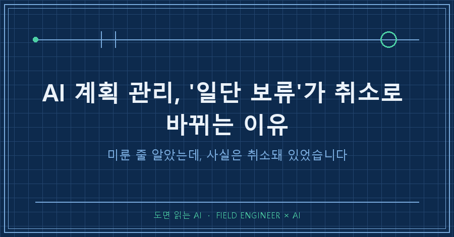
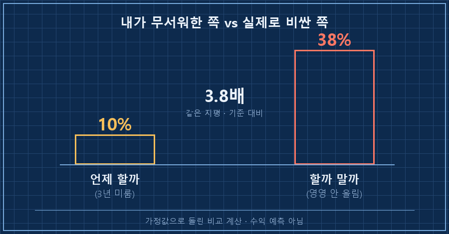
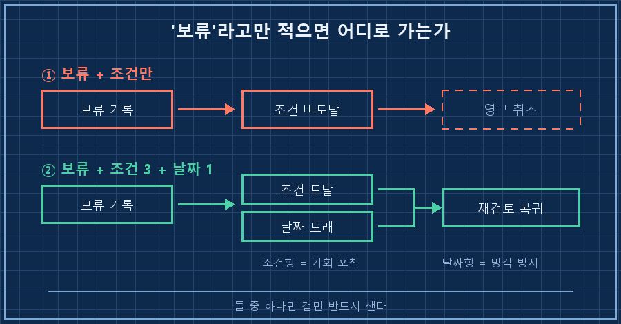
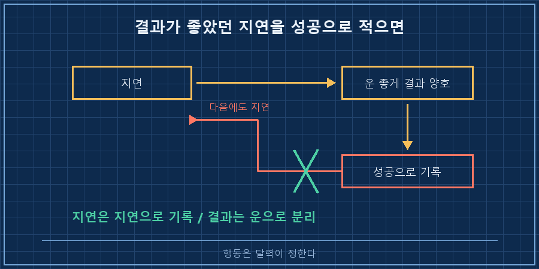

며칠 전 글에서 매달 빠져나갈 항목이 하나 늘어서 문서의 설명 한 줄이 틀린 문장이 됐다는 얘기를 썼어요. 오늘은 같은 날 있었던 나머지 절반입니다. 그날 저는 문장만 고친 게 아니라, 계획 하나를 접었거든요.
결론부터 적어둘게요.
AI 계획 관리에서 '일단 보류'라고만 적으면, 그건 미룬 게 아니라 취소한 겁니다. 보류에는 반드시 두 가지가 같이 붙어야 해요. 되돌아올 조건, 그리고 조건이 안 와도 무조건 열어볼 날짜. 이 둘 중 하나라도 빠지면 그 항목은 목록에서 조용히 사라집니다.
설비 제어 쪽 일을 15년 했는데, 그 바닥에서 배운 게 하나 있어요. 조건 없이 "나중에"라고 적힌 일은 안 돌아옵니다. AI한테 문서를 맡기고 나서도 똑같더라고요. 2026년 9월, 회사 일이 아니라 개인 가계·적립 관리용으로 굴리는 문서에서 겪은 얘기예요.
계획을 접는 건 5초, 문제는 그다음이었어요
원래 10월부터 매달 넣는 금액을 올리기로 돼 있었어요. 몇 달 전에 문서에 박아둔 계획이었고요.
그런데 고정지출이 하나 늘었습니다. 마침 만기되는 적금이 있어서 매달 나가던 납입금 하나가 자유로워지는 달이었는데, 그 자리를 새 고정지출이 그대로 가져갔어요. 들어올 여유와 나갈 돈이 같은 크기로 맞물려서, 현금흐름은 결과적으로 제자리였고요.
그래서 증액은 취소하고 원래 금액을 유지하기로 했어요. AI한테 "10월 증액 취소, 기존 유지로 바꿔줘"라고 시켰습니다.
여기까지는 5초면 끝나는 일이에요. 표의 한 칸만 고치면 되니까요.
| 2026.10~ | 50만원으로 증액 | ← 이 줄을
| 2026.10~ | 기존 금액 유지 | ← 이렇게 바꾸면 끝그런데 이렇게 고치고 나면, 몇 달 뒤에 이 표를 여는 사람은 애초에 올릴 계획이 있었다는 사실 자체를 모릅니다. 취소한 게 아니라 잠깐 세워둔 건데, 문서에는 "유지"라고만 남거든요.
미루는 비용을 계산시켰더니, 무서운 쪽은 반대였어요
그래서 숫자로 확인부터 했습니다. AI한테 시나리오 다섯 개를 돌리게 했어요. 지금 올리는 경우, 1년·3년·5년 뒤에 올리는 경우, 그리고 영영 안 올리는 경우.
전제는 명확히 적어뒀어요. 연 수익률은 가정값이고, 20년 지평이고, 특정 상품 얘기가 아니라 결정 구조를 보려고 돌린 비교 계산입니다. 미래 수익을 예측한 게 아니에요.
결과를 기준값(20년 내내 올린 경우) 대비 비율로만 옮기면 이렇게 나왔습니다.
| 언제 올리느냐 | 기준 대비 손실 |
|---|---|
| 1년 뒤에 올림 | 약 3.6% |
| 3년 뒤에 올림 | 약 10% |
| 5년 뒤에 올림 | 약 15.6% |
| 영영 안 올림 | 약 38% |
제가 걱정하던 건 "지금 못 올리는 것"이었어요. 그런데 표를 보니 3년을 미뤄도 10%였고, 아예 안 하면 38%였습니다. 대략 3.8배 차이예요.

그러니까 제가 붙들고 있던 고민은 싼 쪽이었어요. 진짜 비싼 건 미루는 게 아니라 미룬 걸 잊는 것이었고요. 그날 AI가 문서에 적은 문장이 이 한 줄입니다.
비용이 발생하는 유일한 경로는 재검토를 잊는 것이다.여러분도 "일단 보류"라고 적어둔 항목, 마지막으로 열어본 게 언제인가요?
그래서 '보류'라고만 적는 걸 그만뒀습니다
조치는 간단했어요. 취소 한 줄 대신, 돌아올 길을 같이 적었습니다.
★증액 재검토 트리거 (조건 도달 시 에이전트가 먼저 제안할 의무)
1. 비상금 목표 달성 → 여윳돈의 메인 엔진이 넘어가는 시점
2. 목돈 수령 → 비상금 보강 우선, 잔여분으로 증액 검토
3. 이번에 늘어난 고정지출 종료 또는 소득 증가
4. 2027년 1월 연간 리뷰 — 위 3개가 모두 미도달이어도 무조건 재점검여기서 제일 중요한 건 1~3번이 아니라 4번이에요.
1~3번은 전부 조건형이에요. 조건이 오면 열립니다. 문제는 조건이 안 오면 영영 안 열린다는 거예요. 저는 이 함정을 이미 한 번 밟아봤어요. 다른 프로젝트에서 8월에 "회복 기간 끝나고 재논의"라고 조건만 달아 보류해둔 항목이 있는데, 그 조건이 애매하게 지나가면서 아직도 목록에 그대로 앉아 있습니다.. 조건형만 걸면 이렇게 돼요.
그래서 날짜형 하나를 무조건 섞습니다. 조건이 하나도 안 왔어도 그 날짜엔 열어서 "아직도 아닌가?"를 묻게요. 조건형은 기회를 잡는 장치고, 날짜형은 망각을 막는 장치예요. 역할이 다르니까 둘 다 필요하더라고요.

그리고 이걸 문서 안에만 두지 않고 추적 목록에 별도 항목으로 등록했어요. AI 계획 관리가 실제로 굴러가느냐는 여기서 갈립니다. 규칙 파일에 적힌 건 그 파일을 열 때만 보이는데, 추적 목록은 세션 시작할 때마다 읽히거든요. 대화 중에 말로 "나중에 다시 보자"고 한 건 다음 세션이면 없는 셈이에요. 파일에 적힌 것만 살아남습니다.
보류를 적을 때 같이 적는 네 줄을 그대로 옮기면 이렇습니다.
- 무엇을 보류하는가 (원래 계획이 뭐였는지)
- 왜 지금은 아닌가 (조건이 아니라 사유)
- 무엇이 오면 다시 여는가 (조건 2~3개)
- 아무것도 안 와도 언제 여는가 (날짜 1개, 필수)
운 좋았던 지각을 성공으로 적지 않기로 했어요
같은 날 하나 더 정리한 게 있어요.
그달 정기 실행이 2주쯤 늦었어요. 제 게으름이었고요. 그런데 그사이 가격이 눌리면서 결과적으로는 더 유리하게 체결됐습니다. 기분이 좋았죠.
AI한테 이 건을 기록하라고 했는데, 돌아온 판단이 좀 뜻밖이었어요. 결과는 좋았지만 성공 사례로는 안 남기겠다는 거였습니다. 이유가 이랬어요.
기다려서 좋았던 달만 기억에 남는다.
지연을 성공 사례로 남기면 다음 지연을 부른다.
행동은 달력이 정한다.읽고 나서 좀 뜨끔했어요. 제가 원한 건 "이번엔 늦어서 다행이었다"는 기록이었거든요. 그런데 그 문장이 문서에 남으면, 다음번에 늦었을 때 저는 그 줄을 근거로 삼을 거잖아요.
미루기는 가끔 보상을 받아요. 그리고 보상받은 미루기만 기억에 남고요. AI 계획 관리에서 결과가 좋았던 지연을 성공으로 적는 순간, 그 문서는 다음 지연의 알리바이가 됩니다. 늦은 건 늦은 걸로 적고, 좋았던 건 운으로 적는 게 맞더라고요.

이건 저도 궁금했던 부분
Q. 그냥 달력에 알림 하나 걸어두면 되는 거 아닌가요?
날짜 알림만 걸면 조건이 먼저 왔을 때를 못 잡아요. 반대로 조건만 걸면 조건이 안 오는 해에는 영영 안 열리고요. 저는 조건 3개에 날짜 1개를 섞었습니다. 알림 앱이든 문서든 도구는 안 가리는데, 둘 중 하나만 있으면 반드시 새요.
Q. AI한테 한 번 말해두면 알아서 챙겨주지 않나요?
안 챙겨줍니다. "조건 도달 시 먼저 제안할 의무"처럼 의무로 적고, 매 세션 읽히는 목록에 등록해야 챙겨요. 저는 대화 중에 지시한 게 다음 세션에 통째로 증발하는 걸 여러 번 겪고 나서야 이 순서를 지키게 됐어요.
취소와 보류는 문서에서 똑같이 생겼어요. 한 칸 고친 표만 보면 구분이 안 됩니다. 구분을 만드는 건 그 옆에 붙은 조건과 날짜뿐이에요. 저는 이번에 그 네 줄을 붙이는 데 10분 썼고, 안 붙였으면 아마 내년 이맘때까지 아무 일도 안 일어났을 겁니다..
이렇게 한번 데이고 규칙으로 굳힌 것들은 makefield.ai 쪽에 사유까지 같이 모아두는 중이에요.
혹시 여러분 할 일 목록에도 "언젠가" 폴더가 있나요? 거기 제일 오래된 항목이 들어간 날짜를 한번 보세요. 저는 보고 좀 조용해졌습니다.
태그: #AI계획관리 #AI목표관리 #AI결정기록 #AI에게일시키기 #AI비서규칙 #AI자동화관리 #개인AI에이전트 #AI메모리관리 #AI지식관리 #할일관리 #리마인더설정 #의사결정기록 #자동화습관 #파이썬자동화 #도면읽는AI